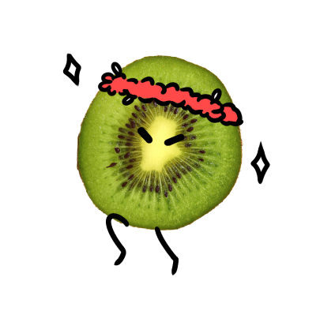
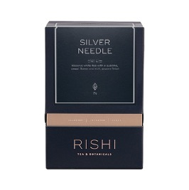

무대의 주인공 키위
모두들 나에게 집중!
통통 튀는 매력쟁이 당신!
나서는 걸 좋아하는 당신은 즉흥적이고 자유로운 상황을 즐기죠.
친화력이 좋아 누구와도 친해질 수 있고, 항상 낙천적이기 때문에
많은 사람들이 좋아하는 성격이기도 해요.
하지만 차분하게 있기 힘든 성격이기 때문에,
가끔은 차분하게 있는 것을 시도해보고 싶다면 추천해드릴 차가 있어요
추천 차
RISHI - Silver Needle
(teabags, caffeine)
떫은 맛 없이 부드러운 맛이 입안에 은은하게 퍼지는 백차예요.
몸을 시원하게 해주는 백차기에 불타오르는 마음을 조금 진정시킬 수 있을 거예요
일 년 중 극히 짧은 기간인 이른 봄에 수확한 어린 찻잎 봉오리로 만들었답니다.